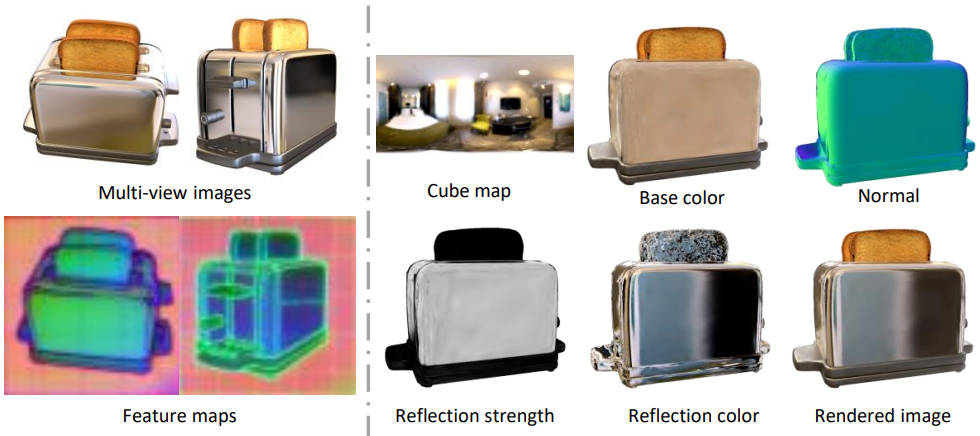
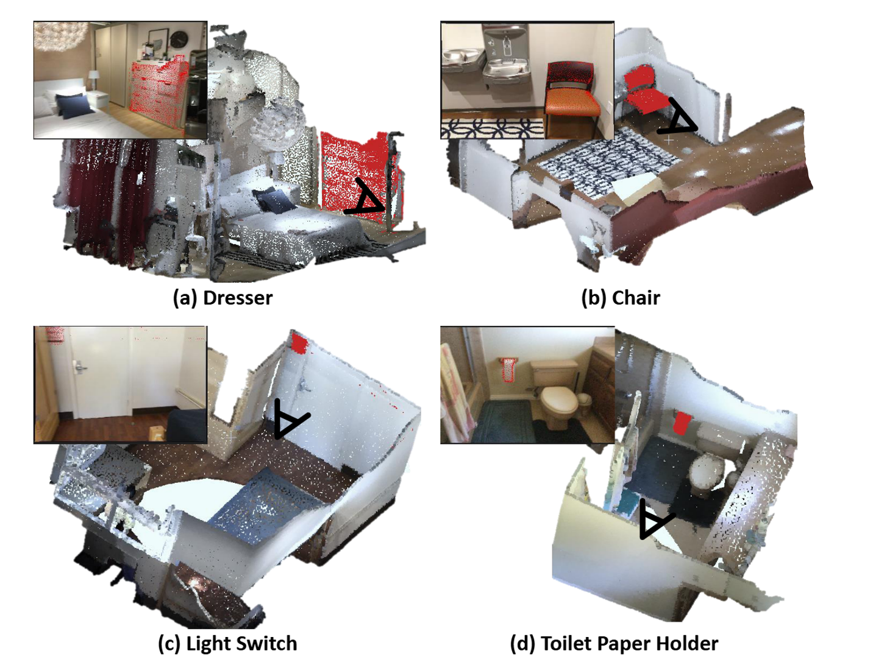
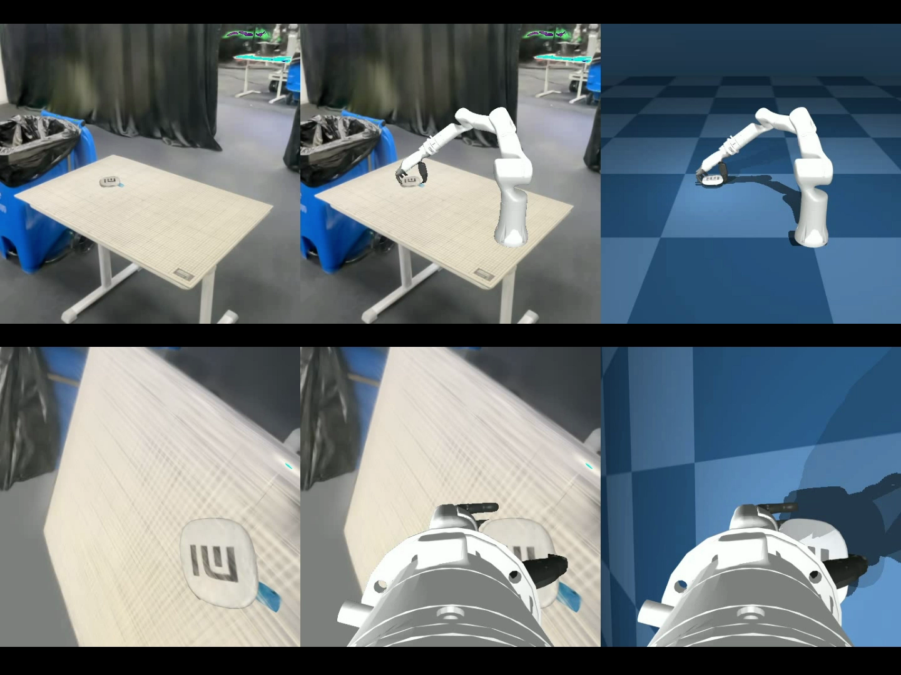

I was born on Oct 10th, 2000 in Dengfeng, China, which is home to various religious institutions and famous temples and located at the foot of the Mount Song, one of the most sacred mountains in China.
I alse took many Biology & Chemistry courses during my initial 2 years in University.
Research interests
My research interests are computer vision, machine learning and multi modal, specifically, learning-based methods for 3D shape analysis, Geometry processing, Neural implicit representation, Generation, etc.
I am working at the intersection between Machine learning and Computer Vision,
developing new machine learning methods to resolve the challenging problems in 3D Vision,
especially focus on Reconstruction and Scene Understanding.
My long-term goal is to improve the application of 3D Vision,
benefiting society directly by improving people's living environment.
Much of my research is about inferring the physical world (shape, motion, color, light, etc) from images and 3D raw data.
Representative papers are highlighted.

Semantic-Guided Gaussian Splatting
with Deferred Rendering Nan Wang,
Xiaohan Yan,
Xiaowei Song,
Zhicheng Wang
ICASSP 2025
We use semantic features derived from 2D foundation model to revolutionize the material property optimization for 3DGS.

RE0: Recognize Everything with 3D Zero-shot Open-Vocabulary Instance Segmentation Xiaohan Yan,
Zijian Jiang,
Yinghao Shuai,
Nan Wang,
Xiaowei Song under review
We leverage the 3D geometry information and the semantic features to address the challenge of 3D instance segmentation.

A Real2Sim Pipeline for robotics simulation Nan Wang
2024/06
We use 3D Gaussain Splating to build a novel robotics simulator, the physical simulation is implemented by ISSAC SIM while the photorealistic render is implemented by 3DGS.
{kind=link}